三套桌面与移动端高保真原型，共用同一份代表性数据：重叠事件、任务安排、截止事项、重复任务、逾期与完成状态都在场。方向差异来自信息结构与视觉语言，不是换色。
它是唯一一套让 DaySpark 的领域模型直接变成视觉语法的方向：事件、安排、截止各有图标、时长、位置和行式，负载与缓冲冲突也能在首屏读到。移动端密度已收口，但仍是三套里最需要克制的方向。
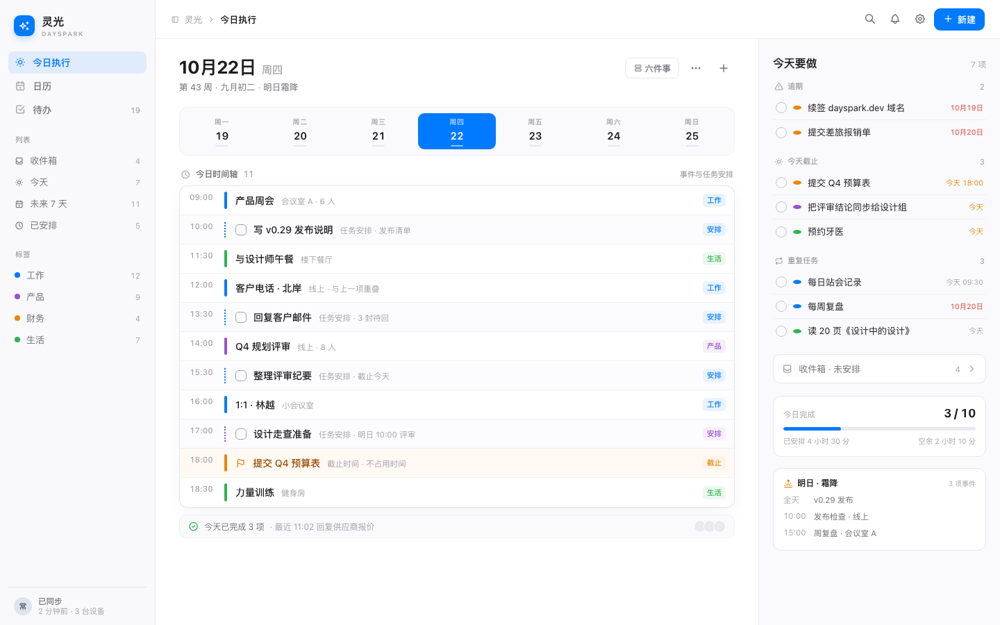
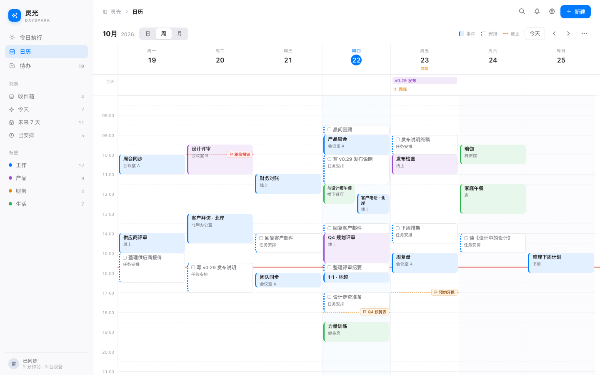
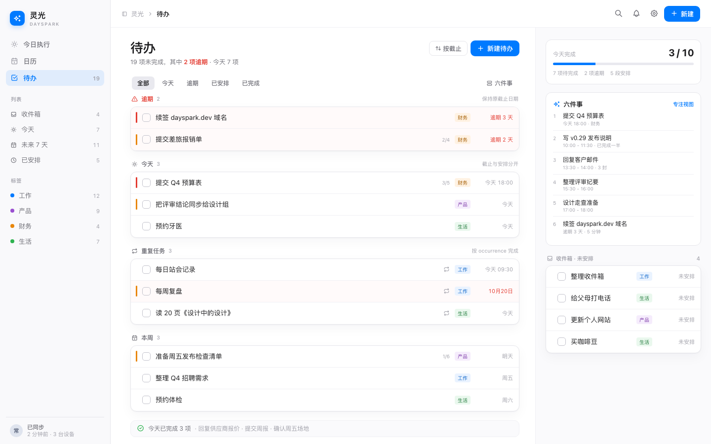
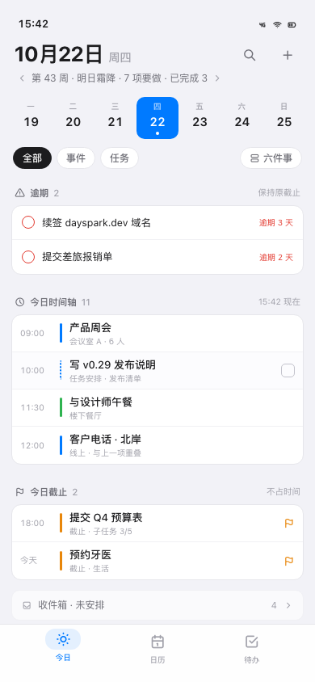
跨平台一致性与移动端功能完整度；截止事项始终单独成组、不占时间轴。
蓝色同时承担主操作、选中日与工作标签，语义有轻微竞争；右侧栏与主列存在信息重复。
补日历三行图例；移动端周切换加左右箭头；修复周视图底部 22px 裁切。
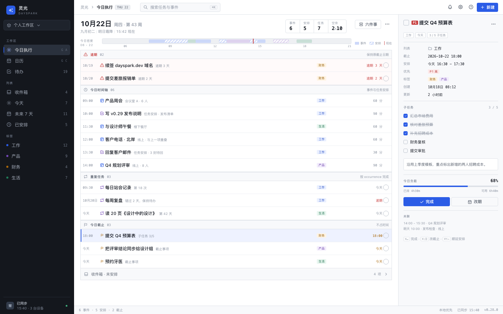
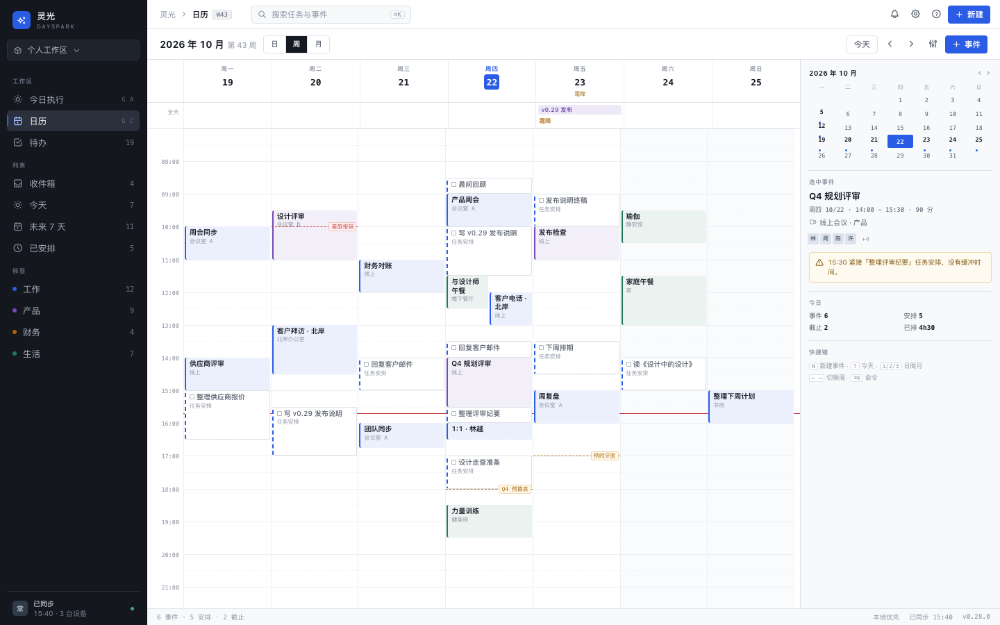
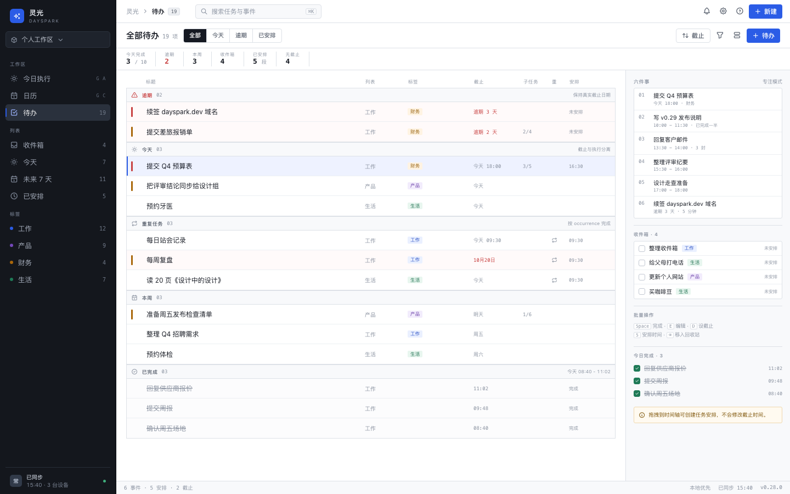
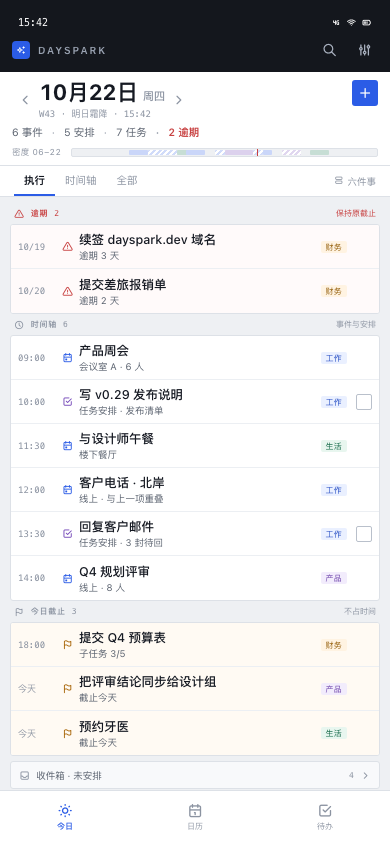
把领域语义、负载、缓冲冲突和六件事上限变成可扫读的工作台，而不是装饰性的卡片。
固定检查器会长期占用时间轴宽度；9–10px 的辅助信息需要继续守住可读性。
移动端四格指标压成一行、密度条并入头部；正文与触控目标放大；密度条补图例；检查器收窄并补元数据。
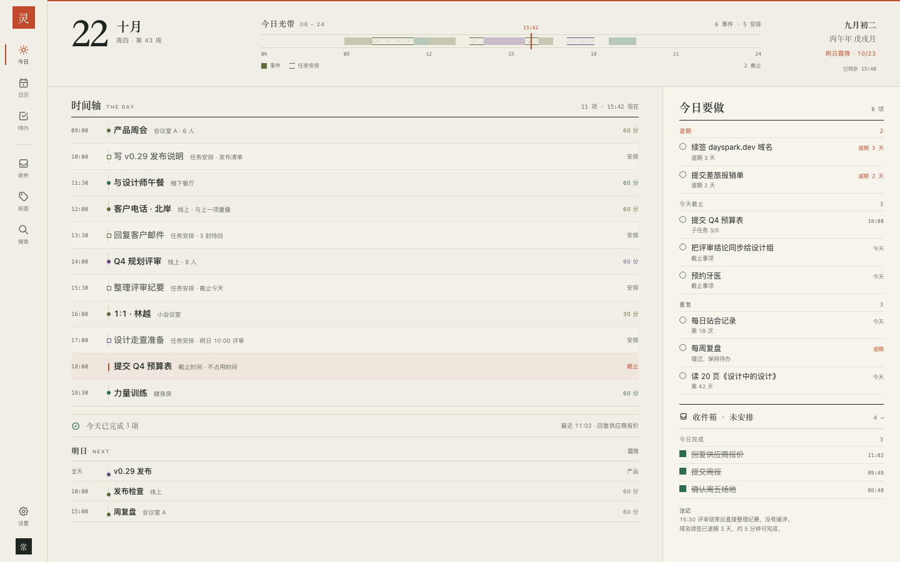
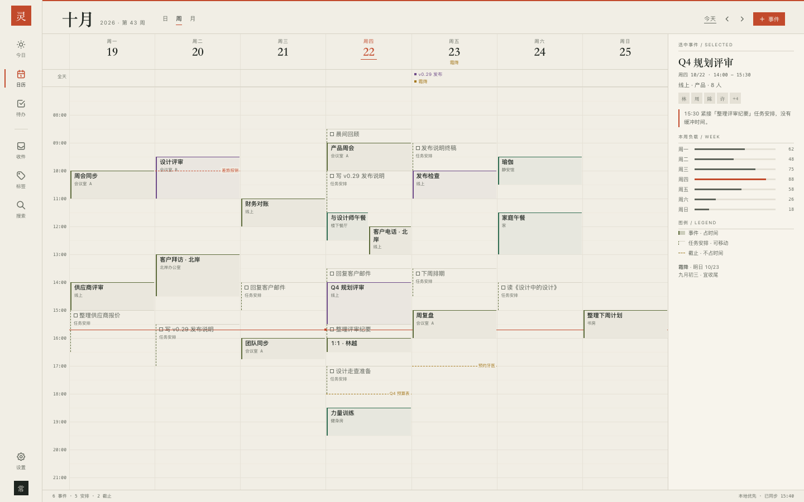
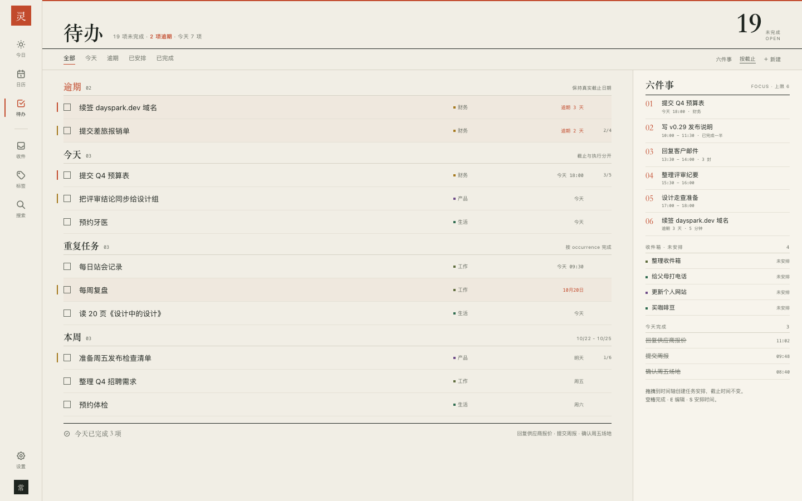
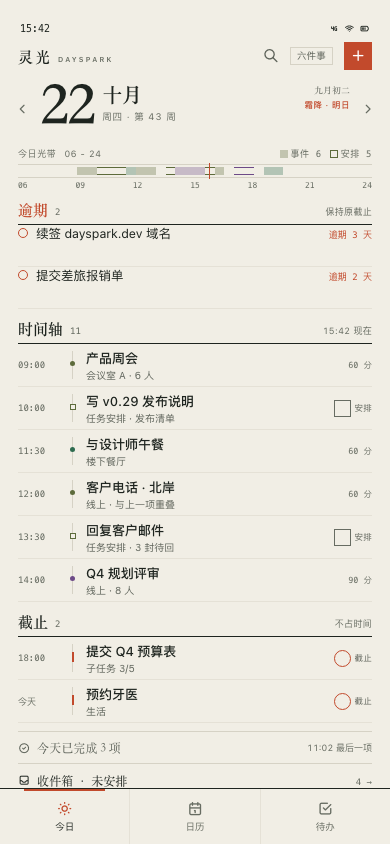
品牌记忆点与日历图例——“占时间 / 可移动 / 不占时间”直接写出领域模型。
编辑性装饰会挤占首屏；浅灰小字对比度需要守住；柿色同时承担品牌、现在线、截止与逾期。
提高辅助文字对比度并放大移动端字号；移动端补日切换、六件事入口与明确完成控件；截止标题降为墨色，只保留柿色标记。
两轮隔离评审：一轮十项启发式与视觉判断，一轮 Impeccable detector + 实际浏览器测量。所有页面最终复测无横向溢出、无控制台错误、图标字体已加载；仅移动端固定快照存在 5–10px 的内容尾部裁切，属于静态截图限制。
本轮只做视觉设计。未修改 DaySpark 仓库源码，未实施 Flutter，未开 PR。原型为静态 HTML/CSS/JS，仅用于校对布局、层级与语义，不作为交互实现。